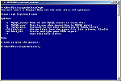
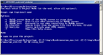
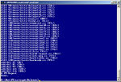
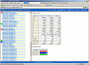
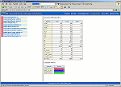
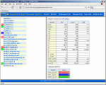
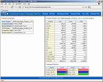
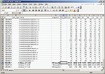
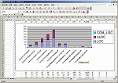
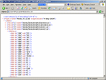

|  | Command-line operation
Easy command-line help gets you up and running quickly. |
|
|  | Example Command-line use
Use the help screen to build and test your command line parameters. Once perfected, you can build into a batch process to automatically produce metrics results and store them on your intranet. |
|
|  | Progress reported during analysis
Progress is reported as files are parsed, diff'd and additions/deletions analysed. Small-medium size projects (up to 15,000 LOC) take under 5 minutes to analyse and report so you won't be waiting for long anyway! |
|
|  | HTML Reporting - Projects
Simple, clear, easy-to-follow HTML reports (that can be easily published to your intranet) allow you to view the overall Project metrics at a glance. When comparing Projects, you can see old and new values, the differences, and the invalulable Changed/Added/Deleted SLOC values. |
|
|  | HTML Reporting - Changes
The Changed / New / Deleted files navigation options allow you to quickly jump to a subset of the 'All files' option to get the information you are looking for. All colours in the HTML report are CSS-driven, meaning the stylesheet can be easily modified to suit your corporate colours. |
|
|  | HTML Reporting - Multi-language
Files of different languages will be analysed by the appropriate parser and common metrics produced. In this example, C#, C++, Java, VB and PL/SQL files have been analysed. The selected file is shown on the right - notice the language highlighted in blue after the filename. |
|
|  | HTML - Multi-language Project
Common metrics produced by each language parser are totalled for an overall project view. At last it is possible to get a project snapshot that relfects all source in the project, and see changed, added and deleted source lines of code. |
|
|  | CSV Reporting
CSV reports allow file and project metrics to be loaded into any other system where comma-separated files are accepted. |
|
|  | Charts from CSV
If you have a tool like Excel you can quickly produce useful charts. Here, the differences between metrics in two versions of a project are shown. These charts can be easily automated using Excel macros, or if you import the data into your standard reporting environment you could use your own report tool. |
|
|  | Raw XML Data
EPM provides an XML report - ideal for transferring data into other applications that support this format. |
|


){kind=link}
){kind=link}
 take under 5 minutes to analyse and report so you won\'t be waiting for long anyway!')){kind=link}
 allow you to view the overall Project metrics at a glance. When comparing Projects, you can see old and new values, the differences, and the invalulable Changed/Added/Deleted SLOC values.')){kind=link}
){kind=link}
){kind=link}
){kind=link}
){kind=link}
){kind=link}
){kind=link}